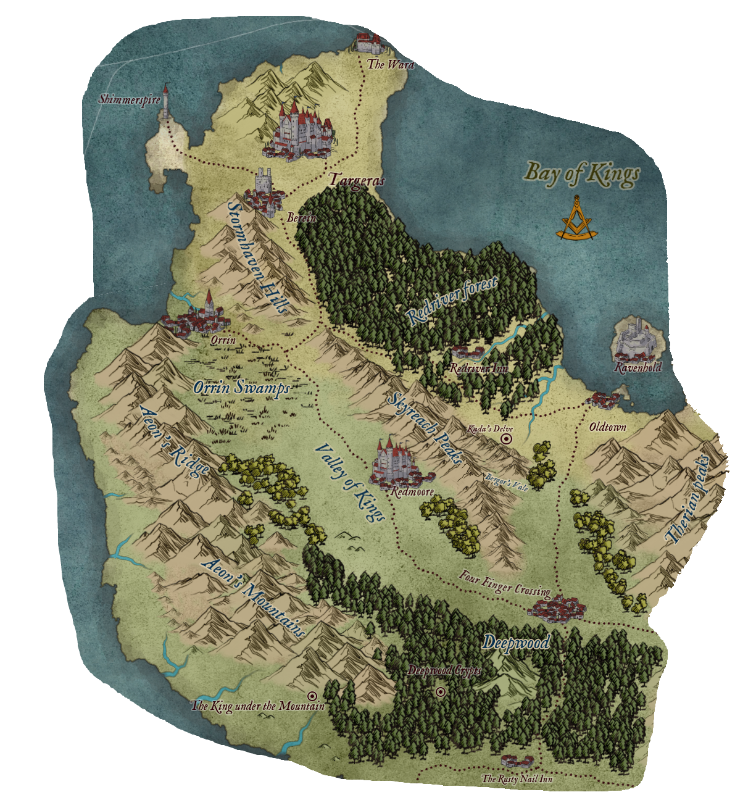

Below is a map of land known to our adventurers, complete with list of towns and locations they visited. Clicking on location's name will bring you to detailed description of it.
Sleepy town at southern end of Bay of Kings, most commonly used as shipping port of nearby Four Finger Crossing.
Small town hiding next to Redriver, main woodcutting centre in region and only source of finest Redriver pine wood.
Big trading outpost at crossing of 2 roads. You can barely call it home and you certainly can’t call it town but regardless of what you wish to call it you can buy anything in its narrow alleyways and open markets. Really, anything; food, weapons, magic items, guides and more… shady… things. But be careful where you step and when you choose to be there, Four Finger Crossing has no law.
Merchant town known for its trade of magical artifacts